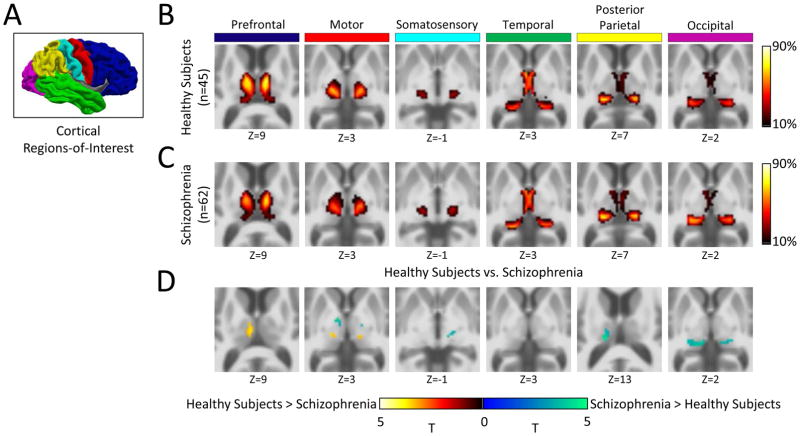

Usage: sips [flags] inputFile [--out outputFile]
Image modification flags:
| Flag | Meaning |
|---|---|
| -s key value | Set the value for a key (see tables below for the available profile property keys and acceptable values for each key). |
| -r degreesCW | Rotate an image several degrees clockwise. |
| -f option | Flip the image using one of the following two options: horizontal or vertical. |
| -c pixelsH pixelsW | Crop image to fit specified size. pixelsH indicates the new height in number of pixels, pixelsW indicates the new width in number of pixels. |
| -z pixelsH pixelsW | Resample image at specified size. Image aspect ratio may be altered. pixelsH indicate the new height in number of pixels, pixelsW indicate the new width in number of pixels. |
| -Z pixelsWH | Resample image so height and width aren't greater than specified. |
| --resampleWidth pixelsW | Resample image to specified width. pixelsW indicate the new width in number of pixels. |
| --resampleHeight pixelsH | Resample image to specified height. pixelsH indicate the new height in number of pixels. |
| -o | Optimize color for sharing. |
If you want to modify one image to match the properties of another image (for example have one image match the height of another image), you can use the flag --getProperty with one of the following properties (which can also be used as parameters for some of the flags described above):
| Profile property keys | Usage |
|---|---|
| dpiHeight | Height in dpi (printer dots per inch). |
| dpiWidth | Width in dpi (printer dots per inch). |
| pixelHeight | Height in number of pixels. |
| pixelWidth | Width in number of pixels. |
| format | Image format. Acceptable values for this key: jpeg, tiff, png, gif, jp2, pict, bmp, qtif, psd, sgi, tga, pdf. |
| formatOptions | Quality of the new image. Acceptable values for this key: low, normal, high, best, or some percentage. |
| samplesPerPixel | Samples per pixel. |
| bitsPerSample | Bits per sample. |
| software | Software use to create the image. |
| description | Description. |
| copyright | Copyright. |
| version | Version. |
| platform | Platform where file was created. |
| quality | Acceptable values for this key: normal, draft, best. |
| renderingIntent | Acceptable values for this key: perceptual, relative, saturation, absolute. |
| creator | Creator of the file. |
For the examples below I will be using the following image, taken from the following article, which I published long time ago: link to article.

Convert AutismArticle1.png to pdf.
$ sips -s format pdf AutismArticle1.png --out AutismArticle1.pdf
/Users/monica/Desktop/Backup/images_presentations/AutismArticle1.png
/Users/monica/Desktop/Backup/images_presentations/AutismArticle1.pdfRotate AutismArticle1.png 45∘ clock-wise.
$ sips -r 45 AutismArticle1.png --out test.png
/Users/monica/Desktop/Backup/images_presentations/AutismArticle1.png
/Users/monica/Desktop/Backup/images_presentations/test.pngResult image:
Rotate AutismArticle1.png 45∘ counter-clock-wise.
$ sips -r -45 AutismArticle1.png --out test.png
/Users/monica/Desktop/Backup/images_presentations/AutismArticle1.png
/Users/monica/Desktop/Backup/images_presentations/test2.pngResult image:

Flip AutismArticle1.png horizontally.
$ sips -f horizontal AutismArticle1.png --out test.png
/Users/monica/Desktop/Backup/images_presentations/AutismArticle1.png
/Users/monica/Desktop/Backup/images_presentations/test.pngResult image:

Flip AutismArticle1.png vertically.
$ sips -f vertical AutismArticle1.png --out test.png
/Users/monica/Desktop/Backup/images_presentations/AutismArticle1.png
/Users/monica/Desktop/Backup/images_presentations/test.pngResult image:

Crop AutismArticle1.png to fit a new size that be ¼th of its original height and ¼th of its original weight. The first step is to obtain the current width and height using sips with the flags --getProperty pixelWidth and --getProperty pixelHeight. Then, divide the two numbers by four. And finally use sips with the -c flag to crop the file.
$ sips --getProperty pixelHeight AutismArticle1.png
/Users/monica/Desktop/Backup/images_presentations/AutismArticle1.png
pixelHeight: 440
$ sips --getProperty pixelWidth AutismArticle1.png
/Users/monica/Desktop/Backup/images_presentations/AutismArticle1.png
pixelWidth: 727
$ echo "440/4" | bc -l
110.00000000000000000000
$ echo "727/4" | bc -l
181.75000000000000000000
$ sips -c 110 181 AutismArticle1.png --out test.png
/Users/monica/Desktop/Backup/images_presentations/AutismArticle1.png
/Users/monica/Desktop/Backup/images_presentations/test.pngResult image:

Resample image to 110x181.
$ sips -z 110 181 AutismArticle1.png --out test.png
/Users/monica/Desktop/Backup/images_presentations/AutismArticle1.png
/Users/monica/Desktop/Backup/images_presentations/test.png
$ sips --getProperty pixelHeight test.png
/Users/monica/Desktop/Backup/images_presentations/test.png
pixelHeight: 110
$ sips --getProperty pixelWidth test.png
/Users/monica/Desktop/Backup/images_presentations/test.png
pixelWidth: 181Result image: